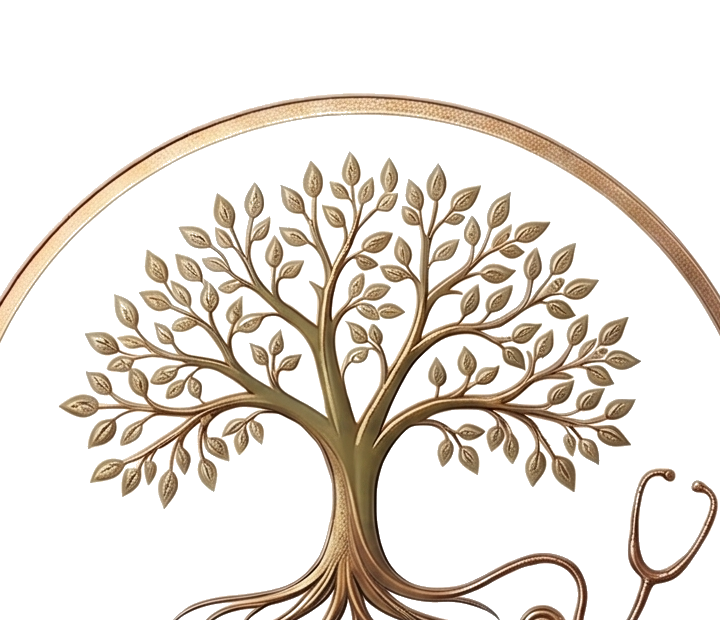

<!doctype html>
<html lang="ro">
<head>
  <meta charset="utf-8" />
  <meta name="viewport" content="width=device-width, initial-scale=1" />
  <title>Olesea Jalba — Concepte Homepage (runda 2)</title>

  <link rel="preconnect" href="https://fonts.googleapis.com">
  <link rel="preconnect" href="https://fonts.gstatic.com" crossorigin>
  <link href="https://fonts.googleapis.com/css2?family=Cormorant+Garamond:ital,wght@0,300;0,400;0,500;0,600;1,300;1,400;1,500&family=Manrope:wght@300;400;500;600;700&family=JetBrains+Mono:wght@400;500&display=swap" rel="stylesheet">

  <link rel="stylesheet" href="styles.css">

  <script src="https://unpkg.com/react@18.3.1/umd/react.development.js" integrity="sha384-hD6/rw4ppMLGNu3tX5cjIb+uRZ7UkRJ6BPkLpg4hAu/6onKUg4lLsHAs9EBPT82L" crossorigin="anonymous"></script>
  <script src="https://unpkg.com/react-dom@18.3.1/umd/react-dom.development.js" integrity="sha384-u6aeetuaXnQ38mYT8rp6sbXaQe3NL9t+IBXmnYxwkUI2Hw4bsp2Wvmx4yRQF1uAm" crossorigin="anonymous"></script>
  <script src="https://unpkg.com/@babel/standalone@7.29.0/babel.min.js" integrity="sha384-m08KidiNqLdpJqLq95G/LEi8Qvjl/xUYll3QILypMoQ65QorJ9Lvtp2RXYGBFj1y" crossorigin="anonymous"></script>

  <style>
    html, body { margin: 0; padding: 0; background: #f0eee9; }
    #root { width: 100%; min-height: 100vh; }
  </style>
</head>
<body>
  <div id="root"></div>

  <!-- SVG filters for photo duotone treatments. Position absolute so they don't take layout space. -->
  <svg style="position:absolute;width:0;height:0;overflow:hidden" aria-hidden="true">
    <defs>
      <!-- Duotone: dark→ink #1c1812, light→cream #f5f1ea -->
      <filter id="duotone-ink">
        <feColorMatrix type="matrix" values="0.33 0.33 0.33 0 0  0.33 0.33 0.33 0 0  0.33 0.33 0.33 0 0  0 0 0 1 0"/>
        <feComponentTransfer>
          <feFuncR tableValues="0.11 0.96"/>
          <feFuncG tableValues="0.09 0.94"/>
          <feFuncB tableValues="0.07 0.92"/>
        </feComponentTransfer>
      </filter>
      <!-- Duotone: dark→deep olive #2a3315, light→cream #f5f1ea -->
      <filter id="duotone-olive">
        <feColorMatrix type="matrix" values="0.33 0.33 0.33 0 0  0.33 0.33 0.33 0 0  0.33 0.33 0.33 0 0  0 0 0 1 0"/>
        <feComponentTransfer>
          <feFuncR tableValues="0.16 0.96"/>
          <feFuncG tableValues="0.20 0.94"/>
          <feFuncB tableValues="0.08 0.92"/>
        </feComponentTransfer>
      </filter>
      <!-- Duotone: dark→walnut, light→cream — warm sepia feel -->
      <filter id="duotone-warm">
        <feColorMatrix type="matrix" values="0.33 0.33 0.33 0 0  0.33 0.33 0.33 0 0  0.33 0.33 0.33 0 0  0 0 0 1 0"/>
        <feComponentTransfer>
          <feFuncR tableValues="0.20 0.96"/>
          <feFuncG tableValues="0.14 0.92"/>
          <feFuncB tableValues="0.10 0.85"/>
        </feComponentTransfer>
      </filter>
    </defs>
  </svg>

  <script type="text/babel" src="design-canvas.jsx"></script>
  <script type="text/babel" src="tweaks-panel.jsx"></script>

  <!-- Marks (must load before variants so window.BranchSVG is the context-aware one) -->
  <script type="text/babel" src="marks.jsx"></script>

  <!-- Variants -->
  <script type="text/babel" src="variants/01-cabinet.jsx"></script>
  <script type="text/babel" src="variants/02-jurnal.jsx"></script>
  <script type="text/babel" src="variants/03-prim-contact.jsx"></script>
  <script type="text/babel" src="variants/04-ramura.jsx"></script>
  <script type="text/babel" src="variants/05-carnet.jsx"></script>

  <script type="text/babel" src="variants/home/shell.jsx"></script>
  <script type="text/babel" src="variants/home/A-servicii-mari.jsx"></script>
  <script type="text/babel" src="variants/home/B-cum-functioneaza.jsx"></script>
  <script type="text/babel" src="variants/home/C-pentru-cine.jsx"></script>
  <script type="text/babel" src="variants/home/D-galerie.jsx"></script>
  <script type="text/babel" src="variants/home/E-combinat.jsx"></script>

  <script type="text/babel">
    const { DesignCanvas, DCSection, DCArtboard, DCPostIt,
            MarkContext, MARKS, MARK_LABELS, BranchSVG,
            TweaksPanel, useTweaks, TweakSection, TweakRadio, TweakSelect, TweakColor,
            HomeA, HomeB, HomeC, HomeD, HomeE,
            CabinetVariant, JurnalVariant, PrimContactVariant, RamuraVariant, CarnetVariant } = window;

    // Accent color presets
    const ACCENTS = {
      olive:       { '--sage': '#7c8a4e', '--sage-2': '#94a266', '--sage-soft': '#c8d09e', '--sage-deep': '#2a3315' },
      'olive-warm':{ '--sage': '#8c7e3a', '--sage-2': '#a39555', '--sage-soft': '#d6cc9a', '--sage-deep': '#3a2f10' },
      sage:        { '--sage': '#5f7251', '--sage-2': '#7a8b6c', '--sage-soft': '#bcc7ad', '--sage-deep': '#22301d' },
      forest:      { '--sage': '#3d5043', '--sage-2': '#5a7060', '--sage-soft': '#b8c4ad', '--sage-deep': '#162017' },
    };

    // Photo treatments — map to (filter, overlay) CSS.
    const PHOTO_TREATMENTS = {
      original:   { '--photo-filter': 'none', '--photo-overlay': 'transparent', '--photo-overlay-blend': 'normal' },
      muted:      { '--photo-filter': 'saturate(0.35) brightness(0.96) contrast(1.02)', '--photo-overlay': 'rgba(124,138,78,0.18)', '--photo-overlay-blend': 'multiply' },
      'duo-olive':{ '--photo-filter': 'url(#duotone-olive)', '--photo-overlay': 'transparent', '--photo-overlay-blend': 'normal' },
      'duo-ink':  { '--photo-filter': 'url(#duotone-ink)', '--photo-overlay': 'transparent', '--photo-overlay-blend': 'normal' },
      'duo-warm': { '--photo-filter': 'url(#duotone-warm)', '--photo-overlay': 'transparent', '--photo-overlay-blend': 'normal' },
      sepia:      { '--photo-filter': 'sepia(0.55) saturate(0.7) brightness(0.98)', '--photo-overlay': 'rgba(245,241,234,0.10)', '--photo-overlay-blend': 'screen' },
    };

    function applyCssVars(target, varsMap) {
      Object.entries(varsMap).forEach(([k, v]) => target.style.setProperty(k, v));
    }

    // Ink (text/dark) tone options
    const INKS = {
      coffee: { '--ink': '#2c2117', '--ink-soft': '#5a4a3a', '--rule': 'rgba(44,33,23,0.16)' },
      coal:   { '--ink': '#1c1812', '--ink-soft': '#4a4239', '--rule': 'rgba(28,24,18,0.14)' },
      walnut: { '--ink': '#3a2a1c', '--ink-soft': '#6b5945', '--rule': 'rgba(58,42,28,0.18)' },
      mocha:  { '--ink': '#4a3826', '--ink-soft': '#7a6852', '--rule': 'rgba(74,56,38,0.20)' },
    };

    /*EDITMODE-BEGIN*/
    const TWEAK_DEFAULTS = {
      "mark": "logoreal",
      "accent": "olive",
      "photo": "original",
      "ink": "coffee"
    };
    /*EDITMODE-END*/

    function App() {
      const [tweaks, setTweak] = useTweaks(TWEAK_DEFAULTS);


      // Apply accent + photo vars to :root so they cascade everywhere.
      React.useEffect(() => {
        applyCssVars(document.documentElement, ACCENTS[tweaks.accent] || ACCENTS.olive);
      }, [tweaks.accent]);
      React.useEffect(() => {
        applyCssVars(document.documentElement, PHOTO_TREATMENTS[tweaks.photo] || PHOTO_TREATMENTS.original);
      }, [tweaks.photo]);
      React.useEffect(() => {
        applyCssVars(document.documentElement, INKS[tweaks.ink] || INKS.coffee);
      }, [tweaks.ink]);

      const MarkPreview = MARKS[tweaks.mark] || MARKS.branch;

      return (
        <MarkContext.Provider value={tweaks.mark}>
          <DesignCanvas title="Olesea Jalba" subtitle="Runda 2 · Homepage · Tweaks pe marcă, culoare, fotografie">

            <DCSection id="brandbook" title="Brand Book" subtitle="Logo-ul nou (sus rotund · jos lung) + paleta + tipografia. Folosit deja în site.">
              <DCArtboard id="logo-round" label="Logo · variantă rotundă" width={900} height={920}>
                <div style={{ width: '100%', height: '100%', background: 'var(--cream)', padding: 40, display: 'flex', flexDirection: 'column' }}>
                  <div style={{ display: 'flex', justifyContent: 'space-between', alignItems: 'baseline', marginBottom: 16 }}>
                    <div className="eyebrow">01 · Variantă rotundă (primary)</div>
                    <div className="mono" style={{ fontSize: 10, color: 'var(--ink-soft)' }}>logo-round.png · 1300×960</div>
                  </div>
                  <div style={{ flex: 1, background: '#ffffff', border: '1px solid var(--rule)', display: 'flex', alignItems: 'center', justifyContent: 'center', padding: 32 }}>
                    
                  </div>
                  <div style={{ marginTop: 16, fontSize: 13, color: 'var(--ink-soft)', lineHeight: 1.6 }}>
                    Folosită ca <strong style={{ color: 'var(--ink)' }}>brand stamp</strong> — în hero ca semn de calitate, în footer, pe materiale tipărite, ca avatar social.
                  </div>
                </div>
              </DCArtboard>

              <DCArtboard id="logo-long" label="Logo · variantă lungă" width={1100} height={660}>
                <div style={{ width: '100%', height: '100%', background: 'var(--cream)', padding: 40, display: 'flex', flexDirection: 'column' }}>
                  <div style={{ display: 'flex', justifyContent: 'space-between', alignItems: 'baseline', marginBottom: 16 }}>
                    <div className="eyebrow">02 · Variantă orizontală (nav)</div>
                    <div className="mono" style={{ fontSize: 10, color: 'var(--ink-soft)' }}>logo-long.png · 1900×760</div>
                  </div>
                  <div style={{ flex: 1, background: '#ffffff', border: '1px solid var(--rule)', display: 'flex', alignItems: 'center', justifyContent: 'center', padding: 32 }}>
                    
                  </div>
                  <div style={{ marginTop: 16, fontSize: 13, color: 'var(--ink-soft)', lineHeight: 1.6 }}>
                    Folosită în <strong style={{ color: 'var(--ink)' }}>nav-ul site-ului</strong>, e-mail signatures, headers de documente. Înălțime minimă: 48px.
                  </div>
                </div>
              </DCArtboard>

              <DCArtboard id="logo-mark" label="Logo · doar marca" width={520} height={660}>
                <div style={{ width: '100%', height: '100%', background: 'var(--cream)', padding: 40, display: 'flex', flexDirection: 'column' }}>
                  <div style={{ display: 'flex', justifyContent: 'space-between', alignItems: 'baseline', marginBottom: 16 }}>
                    <div className="eyebrow">03 · Doar marca</div>
                    <div className="mono" style={{ fontSize: 10, color: 'var(--ink-soft)' }}>logo-mark.png</div>
                  </div>
                  <div style={{ flex: 1, background: '#ffffff', border: '1px solid var(--rule)', display: 'flex', alignItems: 'center', justifyContent: 'center', padding: 24 }}>
                    
                  </div>
                  <div style={{ marginTop: 12, fontSize: 12, color: 'var(--ink-soft)', lineHeight: 1.5 }}>
                    Favicon, social avatar, ștampilă pe materiale.
                  </div>
                </div>
              </DCArtboard>

              <DCArtboard id="palette" label="Paletă · extrasă din logo" width={1100} height={660}>
                <div style={{ width: '100%', height: '100%', background: 'var(--cream)', padding: 40, fontFamily: 'Manrope, sans-serif' }}>
                  <div className="eyebrow">04 · Paletă</div>
                  <h2 className="serif" style={{ fontSize: 36, margin: '6px 0 28px', color: 'var(--ink)', lineHeight: 1.1 }}>
                    <span className="serif-it">Cinci</span> culori — extrase din logo
                  </h2>
                  <div style={{ display: 'grid', gridTemplateColumns: 'repeat(6, 1fr)', gap: 12 }}>
                    {[
                      ['#9c7345', 'Bronz', 'primary'],
                      ['#b99f7a', 'Bronz clar', 'secondary'],
                      ['#8a9a62', 'Salvie', 'natural'],
                      ['#f5f1ea', 'Cremă', 'background'],
                      ['#4d3a28', 'Cocoa', 'dark surface'],
                      ['#2c2117', 'Ink', 'text'],
                    ].map(([hex, name, role]) => (
                      <div key={hex}>
                        <div style={{ background: hex, aspectRatio: '1', border: '1px solid rgba(0,0,0,0.06)' }} />
                        <div style={{ fontSize: 13, marginTop: 8, color: 'var(--ink)', fontWeight: 500 }}>{name}</div>
                        <div className="mono" style={{ fontSize: 10, color: 'var(--ink-soft)', marginTop: 2 }}>{hex}</div>
                        <div style={{ fontSize: 10, letterSpacing: '0.08em', textTransform: 'uppercase', color: 'var(--ink-soft)', marginTop: 2 }}>{role}</div>
                      </div>
                    ))}
                  </div>
                  <div style={{ marginTop: 32, padding: '16px 0', borderTop: '1px solid var(--rule)', fontSize: 13, lineHeight: 1.65, color: 'var(--ink-soft)' }}>
                    Bronzul e prezent în logo (trunchi, text, cerc). Salvia stă în frunze. Crema e fundalul curat. Cocoa e suprafața închisă (footer, carduri alternate). Ink e textul.
                  </div>
                </div>
              </DCArtboard>

              <DCArtboard id="typography" label="Tipografie" width={900} height={660}>
                <div style={{ width: '100%', height: '100%', background: 'var(--cream)', padding: 40 }}>
                  <div className="eyebrow">05 · Tipografie</div>
                  <h2 className="serif" style={{ fontSize: 36, margin: '6px 0 32px', color: 'var(--ink)', lineHeight: 1.1 }}>
                    Două familii, <span className="serif-it">trei</span> roluri
                  </h2>
                  <div style={{ marginBottom: 28, paddingBottom: 24, borderBottom: '1px solid var(--rule)' }}>
                    <div className="serif-it" style={{ fontSize: 56, lineHeight: 1, color: 'var(--ink)' }}>
                      Cormorant Garamond
                    </div>
                    <div className="mono" style={{ fontSize: 11, color: 'var(--ink-soft)', marginTop: 8, letterSpacing: '0.08em' }}>
                      DISPLAY · ITALIC · TITLURI MARI
                    </div>
                  </div>
                  <div style={{ marginBottom: 28, paddingBottom: 24, borderBottom: '1px solid var(--rule)' }}>
                    <div className="serif" style={{ fontSize: 40, lineHeight: 1.1, color: 'var(--ink)' }}>
                      Cormorant Garamond Regular
                    </div>
                    <div className="mono" style={{ fontSize: 11, color: 'var(--ink-soft)', marginTop: 8, letterSpacing: '0.08em' }}>
                      DISPLAY · ROMAN · TITLURI SECUNDARE
                    </div>
                  </div>
                  <div>
                    <div style={{ fontFamily: 'Manrope, sans-serif', fontSize: 20, lineHeight: 1.5, color: 'var(--ink)' }}>
                      Manrope — body text și UI. Citibil, clar, fără personalitate "AI". Greutăți: 300, 400, 500, 600, 700.
                    </div>
                    <div className="mono" style={{ fontSize: 11, color: 'var(--ink-soft)', marginTop: 8, letterSpacing: '0.08em' }}>
                      BODY · SANS · TOATĂ INTERFAȚA
                    </div>
                  </div>
                </div>
              </DCArtboard>

              <DCPostIt>
                Logo-ul nou e deja folosit:<br/>
                · <strong>Nav</strong> — varianta lungă<br/>
                · <strong>Footer</strong> — varianta lungă pe fond cocoa<br/>
                · <strong>Mark (Tweaks)</strong> — doar arborele<br/>
                Schimbă marca prin Tweaks ca să compari cu variantele SVG anterioare.
              </DCPostIt>
            </DCSection>

            <DCSection id="combined" title="E · Combinat — direcția curentă" subtitle="Procesul (B) + scrisul (A). Activează Tweaks din toolbar ca să schimbi marca, culoarea sau tratamentul fotografiei.">
              <DCArtboard id="E" label="E · Proces + Servicii Mari" width={1440} height={4700}>
                <HomeE />
              </DCArtboard>
              <DCPostIt>
                <strong>Tweaks live</strong> — apasă <em>Tweaks</em> din toolbar (sus). Cele trei controale modifică toate variantele de mai jos în timp real.
              </DCPostIt>
            </DCSection>

            <DCSection id="marks-preview" title="Galeria de mărci" subtitle="Cele cinci opțiuni — alege-o pe cea selectată via Tweaks">
              <DCArtboard id="marks" label="Mărci · comparație" width={1100} height={940}>
                <div style={{ width: '100%', height: '100%', background: 'var(--cream)', padding: 56, fontFamily: 'Manrope, sans-serif' }}>
                  <div style={{ display: 'flex', justifyContent: 'space-between', alignItems: 'baseline', marginBottom: 40 }}>
                    <div>
                      <div className="eyebrow">Opțiuni mark</div>
                      <h2 className="serif" style={{ fontSize: 44, margin: '6px 0 0', lineHeight: 1.1 }}>
                        <span className="serif-it">Cinci</span> simboluri,<br/>același rol
                      </h2>
                    </div>
                    <div style={{ fontSize: 13, color: 'var(--ink-soft)', maxWidth: 280, lineHeight: 1.6 }}>
                      Activează Tweaks din toolbar ca să schimbi marca pe site. Cea aleasă acum: <strong style={{ color: 'var(--ink)' }}>{MARK_LABELS[tweaks.mark]}</strong>.
                    </div>
                  </div>
                  <div style={{ display: 'grid', gridTemplateColumns: 'repeat(4, 1fr)', gap: 12 }}>
                    {Object.entries(MARKS).map(([id, Mark]) => {
                      const active = id === tweaks.mark;
                      return (
                        <div key={id} onClick={() => setTweak('mark', id)} style={{
                          background: active ? 'var(--ink)' : 'var(--paper)',
                          color: active ? 'var(--cream)' : 'var(--ink)',
                          border: active ? 'none' : '1px solid var(--rule)',
                          padding: '32px 20px 20px',
                          display: 'flex', flexDirection: 'column', alignItems: 'center',
                          cursor: 'pointer', transition: 'all .15s',
                        }}>
                          <div style={{ width: 72, height: 108, color: active ? 'var(--sage-soft)' : 'var(--sage)' }}>
                            <Mark color={active ? 'var(--sage-soft)' : 'var(--sage)'} />
                          </div>
                          <div style={{ fontSize: 13, marginTop: 20, fontWeight: 500, textAlign: 'center' }}>{MARK_LABELS[id]}</div>
                          {active && <div className="mono" style={{ fontSize: 10, marginTop: 6, opacity: 0.7, letterSpacing: '0.08em' }}>ACTIV</div>}
                        </div>
                      );
                    })}
                  </div>
                </div>
              </DCArtboard>
              <DCPostIt>
                <strong>Logo Olesea (real)</strong> — fix imaginea pe care ai încarcat-o, cu fundalul curatat. Acum implicită. Bună pe fundaluri deschise (cream, paper). Pe fundaluri închise (footer-ul ink) leaves rama®n vizibile dar tonul e mai discret — spune-mi dacă vrei să ajustăm.<br/>
                <strong>Arbore + stetoscop (SVG)</strong> — versiune redesenată în SVG, scalabilă, schimbă culoarea cu accentul.
              </DCPostIt>
            </DCSection>

            <DCSection id="homepage" title="Cele patru variante de middle (referință)" subtitle="A, B, C, D — pentru comparație">
              <DCArtboard id="A" label="A · Servicii Mari" width={1440} height={3950}><HomeA /></DCArtboard>
              <DCArtboard id="B" label="B · Cum funcționează" width={1440} height={3800}><HomeB /></DCArtboard>
              <DCArtboard id="C" label="C · Pentru cine" width={1440} height={3930}><HomeC /></DCArtboard>
              <DCArtboard id="D" label="D · Galerie" width={1440} height={3270}><HomeD /></DCArtboard>
            </DCSection>

            <DCSection id="previous" title="Runda 1 · Pentru referință" subtitle="Cele cinci direcții inițiale">
              <DCArtboard id="v1" label="V1 · Cabinet" width={1440} height={2720}><CabinetVariant /></DCArtboard>
              <DCArtboard id="v2" label="V2 · Jurnal" width={1440} height={2400}><JurnalVariant /></DCArtboard>
              <DCArtboard id="v3" label="V3 · Prim Contact" width={1440} height={2700}><PrimContactVariant /></DCArtboard>
              <DCArtboard id="v4" label="V4 · Ramură" width={1440} height={2820}><RamuraVariant /></DCArtboard>
              <DCArtboard id="v5" label="V5 · Carnet" width={1440} height={3760}><CarnetVariant /></DCArtboard>
            </DCSection>
          </DesignCanvas>

          {/* Tweaks panel — appears when user toggles Tweaks in toolbar */}
          <TweaksPanel title="Tweaks">
            <TweakSection label="Marcă brand">
              <TweakSelect
                label="Simbol"
                value={tweaks.mark}
                onChange={v => setTweak('mark', v)}
                options={Object.keys(MARKS).map(id => ({ value: id, label: MARK_LABELS[id] }))}
              />
              <div style={{ marginTop: 8, display: 'flex', justifyContent: 'center', padding: 16, background: 'rgba(0,0,0,0.04)', borderRadius: 8 }}>
                <div style={{ width: 44, height: 66, color: '#7c8a4e' }}>
                  <MarkPreview color="#7c8a4e" />
                </div>
              </div>
            </TweakSection>

            <TweakSection label="Culoare accent">
              <div style={{ display: 'grid', gridTemplateColumns: 'repeat(4, 1fr)', gap: 8, padding: '4px 0' }}>
                {[
                  { id: 'olive',      hex: '#7c8a4e', label: 'Olive' },
                  { id: 'olive-warm', hex: '#8c7e3a', label: 'Cald' },
                  { id: 'sage',       hex: '#5f7251', label: 'Salvie' },
                  { id: 'forest',     hex: '#3d5043', label: 'Pădure' },
                ].map(o => {
                  const on = o.id === tweaks.accent;
                  return (
                    <button key={o.id} type="button" onClick={() => setTweak('accent', o.id)}
                      style={{
                        background: o.hex, border: on ? '2px solid #1c1812' : '2px solid transparent',
                        borderRadius: 6, padding: 0, height: 56, cursor: 'pointer',
                        display: 'flex', alignItems: 'flex-end', justifyContent: 'center',
                        color: '#fff', fontSize: 10, paddingBottom: 4, letterSpacing: '0.04em',
                      }}>
                      {o.label}
                    </button>
                  );
                })}
              </div>
            </TweakSection>

            <TweakSection label="Ton text (ink)">
              <div style={{ display: 'grid', gridTemplateColumns: 'repeat(4, 1fr)', gap: 8, padding: '4px 0' }}>
                {[
                  { id: 'coffee', hex: '#2c2117', label: 'Cafea' },
                  { id: 'walnut', hex: '#3a2a1c', label: 'Nuc' },
                  { id: 'mocha',  hex: '#4a3826', label: 'Mocha' },
                  { id: 'coal',   hex: '#1c1812', label: 'Cărbune' },
                ].map(o => {
                  const on = o.id === tweaks.ink;
                  return (
                    <button key={o.id} type="button" onClick={() => setTweak('ink', o.id)}
                      style={{
                        background: o.hex, border: on ? '2px solid #7c8a4e' : '2px solid transparent',
                        borderRadius: 6, padding: 0, height: 56, cursor: 'pointer',
                        display: 'flex', alignItems: 'flex-end', justifyContent: 'center',
                        color: '#fff', fontSize: 10, paddingBottom: 4, letterSpacing: '0.04em',
                      }}>
                      {o.label}
                    </button>
                  );
                })}
              </div>
              <div style={{ fontSize: 11, color: 'rgba(0,0,0,0.55)', marginTop: 8, lineHeight: 1.5 }}>
                Cafea / Nuc / Mocha = maro închis cald (mai natural). Cărbune = aproape negru (mai "corporate").
              </div>
            </TweakSection>

            <TweakSection label="Fotografie">
              <TweakSelect
                label="Tratament"
                value={tweaks.photo}
                onChange={v => setTweak('photo', v)}
                options={[
                  { value: 'duo-olive', label: 'Duotone olive' },
                  { value: 'duo-ink',   label: 'Duotone ink' },
                  { value: 'duo-warm',  label: 'Duotone cald (sepia olive)' },
                  { value: 'muted',     label: 'Mut & cald (subtil)' },
                  { value: 'sepia',     label: 'Sepia' },
                  { value: 'original',  label: 'Original (verde studio)' },
                ]}
              />
              <div style={{ fontSize: 11, color: 'rgba(0,0,0,0.55)', marginTop: 8, lineHeight: 1.5 }}>
                Fotografia actuală are fundal verde TV. Tratamentele transformă fundalul ca să se potrivească cu site-ul.
              </div>
            </TweakSection>
          </TweaksPanel>
        </MarkContext.Provider>
      );
    }

    ReactDOM.createRoot(document.getElementById('root')).render(<App />);
  </script>
</body>
</html>
